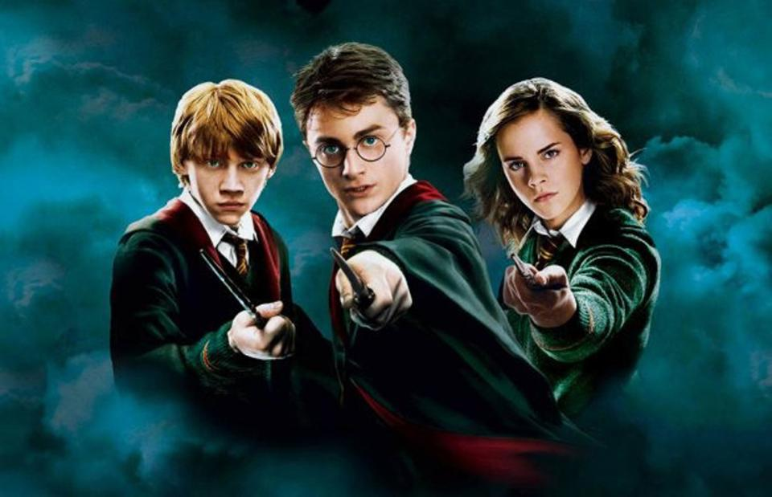
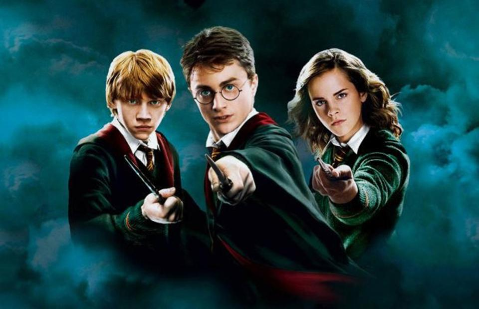

My Ode To...
 

Movies and Release Years
| Movie | Release Year |
|---|---|
| Harry Potter And The Sorcerer's Stone | 2001 |
| Harry Potter And The Chamber Of Secrets | 2002 |
| Harry Potter And The Prisoner Of Azkaban | 2004 |
| Harry Potter And The Goblet Of Fire | 2005 |
| Harry Potter And The Order Of The Phoenix | 2007 |
| Harry Potter And The Half-Blood Prince | 2009 |
| Harry Potter And The Deathly Hallows: Part 1 | 2010 |
| Harry Potter And The Deathly Hallows: Part 2 | 2011 |
Favorite Quotes
"I am what I am, an' I'm not ashamed. 'Never be ashamed,' my ol' dad used ter say, 'there's some who'll hold it against you, but they're not worth botherin' with.'" — Rubeus Hagrid
"We’ve all got both light and dark inside us. What matters is the part we choose to act on. That’s who we really are." ― Sirius Black
"Words are, in my not-so-humble opinion, our most inexhaustible source of magic. Capable of both inflicting injury, and remedying it." ― Albus Dumbledore
"The consequences of our actions are so complicated, so diverse, that predicting the future is a very difficult business indeed." ― Albus Dumbledore